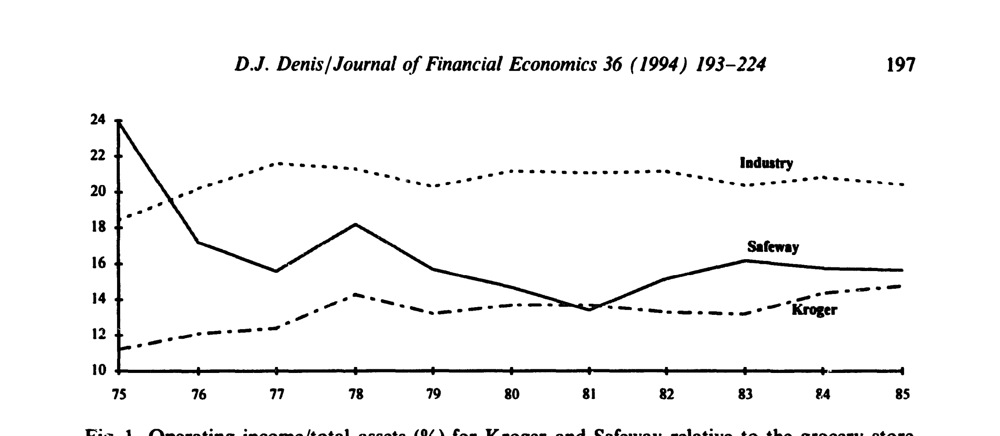
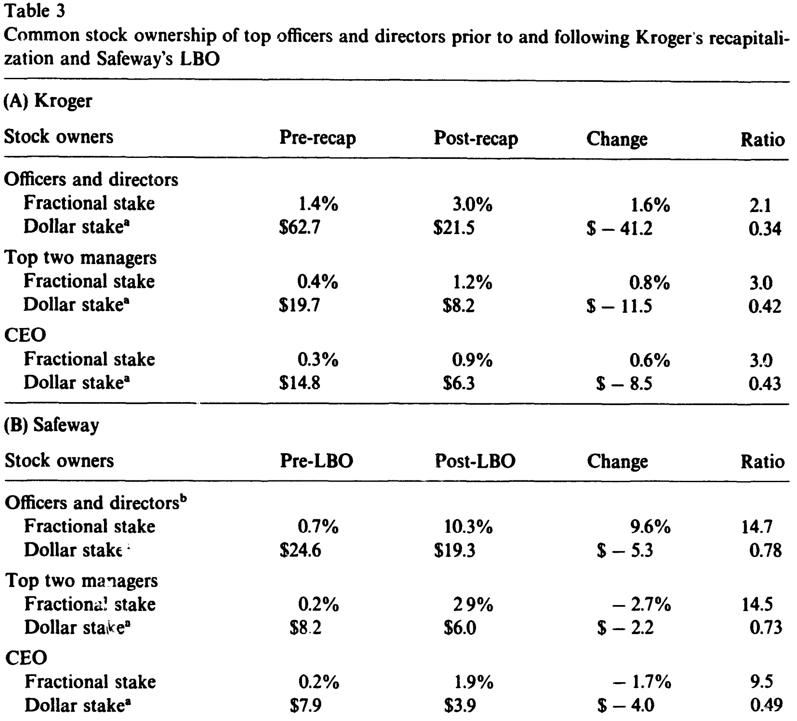
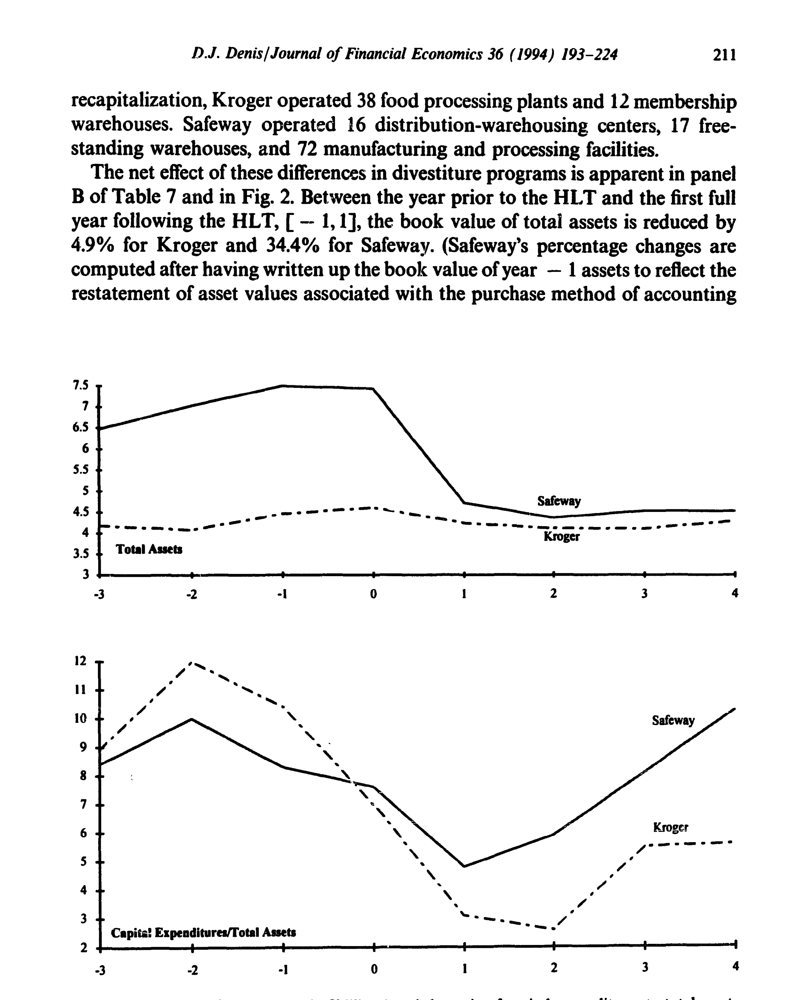
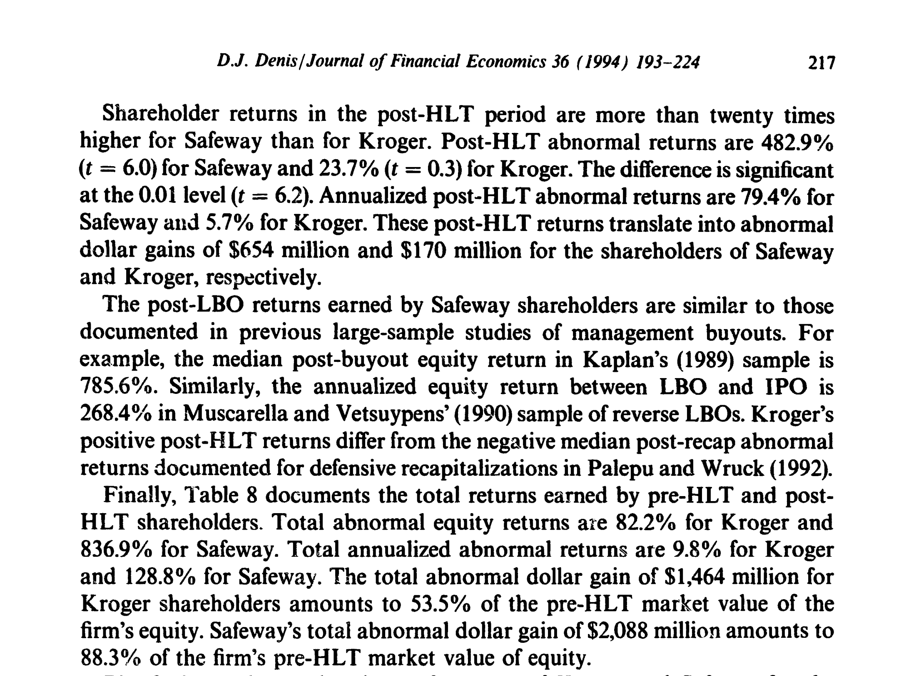
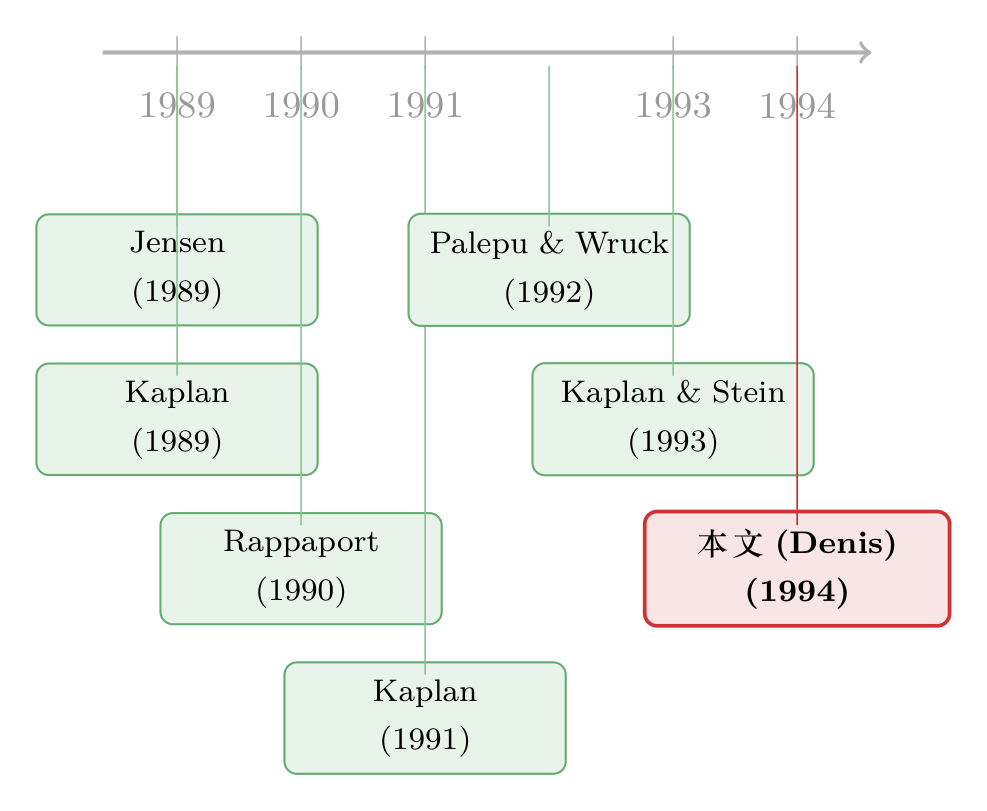

同样借到 90% 的债，为什么一家公司「脱胎换骨」，另一家只是「勒紧裤腰」？
本文读的是 Denis (1994, Journal of Financial Economics)：Kroger 和 Safeway 这两家杂货连锁，几乎在同一时间、由同一个买家 KKR 盯上，最后都背上了超过 90% 的债——可一家只是「换了张资产负债表」，另一家却连老板的持股、董事会、薪酬全都换了一遍。作者用这对「天造地设的双胞胎」证明：真正决定一次高杠杆交易能创造多少价值的，不是杠杆本身，而是杠杆之外那套激励与监督的「组织形式」。
1 一对几乎完美的「孪生实验」
做实证的人，一辈子都在等一个干净的「自然实验」：两个几乎一模一样的对象，只在你关心的那个变量上分了岔。可现实里这样的机会少之又少——公司各有各的禀赋，行业各有各的脾气，你想比较「治理结构」的作用，却总被一堆乱七八糟的差异搅成一锅粥。
1980 年代末，美国杂货零售业却意外地端上来这么一道实验。
先看这两家公司有多像。截至 1985 年底，Kroger 销售额 $17.1 billion、总资产 $4.2 billion、股权市值 $1.8 billion；Safeway 销售额 $19.7 billion、总资产 $4.8 billion、股权市值 $2.2 billion。两家都开在一个出了名「低毛利、高度工会化、资本密集」的行业里——净利润率常年只有 1% 到 1.5%，而光是翻新门店就要每三到八年砸一轮钱。更要命的是，两家公司多年来的经营利润都明显落后于同业：如图 1 所示，从 1980 到 1985 年，Kroger 与 Safeway 的「营业利润/总资产」每年都显著低于行业中位数（0.01 显著性水平），原因高度一致——它们的人工成本远高于那些新冒出来的、非工会化的区域连锁。Safeway 甚至自己估算，付给小时工的工资比行业均值高出 33%。

Figure 1: Operating income/total assets (%) for Kroger and Safeway relative to the grocery store
接着，更巧的来了。1986 年，Haft 家族控制的 Dart Group 对 Safeway 发起敌意要约；最终是收购专家 KKR（Kohlberg, Kravis and Roberts）以 $69 每股、合计 $4.2 billion、相对收购战前价 57.7% 的溢价，把 Safeway 买下来做成了一桩 杠杆收购 (leveraged buyout, LBO)。两年后的 1988 年，同样是 Haft 家族先动手要约 Kroger，又是 KKR 半路杀出、把价钱抬到 $64 每股（61.8% 溢价）。
故事到这里本该重演。可 Kroger 的董事会拒绝了 KKR——哪怕分析师明明把 KKR 的报价（$64）估得比公司自己的方案（$57–$61）更高——转身搞了一套自己的 杠杆资本重组 (leveraged recapitalization, recap)：给股东派一笔 $40 的特别现金股利，外加一张初始交易价约 $8.69 的次级债和一份「残值股票」(stub share)。
于是，两条岔路就此分开。
2 同样的杠杆，不一样的「组织形式」
这才是全文的题眼。
两笔交易在财务杠杆这一维度上几乎无差别：Safeway 的总债务/公司价值从 41% 飙到 96%，Kroger 从 42% 飙到 91%。连给中介付的费用都惊人地一致——都是交易总额的 4%，甚至还低于同期大型 LBO 的中位数（1986 年 5.1%、1988 年 6.0%，见 Kaplan and Stein, 1993）。
但 Jensen (1989) 那篇著名的《公众公司的黄昏》早就提醒过我们：LBO 之所以是一种「更优」的组织形式，靠的从来不只是高杠杆，而是高杠杆 + 管理层高持股 + 活跃投资者（LBO 发起人）的强监督这一整套组合拳。换句话说，杠杆只是这套机器里的一个零件。（关于「为什么现金一定要被逼着还出去」的底层逻辑，可参见《现金为什么一定要「还」出去？——四十年后，重读 Jensen 的自由现金流》。）
那么，Kroger 和 Safeway 在「零件」上，究竟差在哪？
第一，管理层持股。 这是激励的核心。Safeway 的高管与董事持股从买前的 0.7%（$24.6 million）跳到买后的 10.3%（$19.3 million）；而 Kroger 的高管董事持股只从 1.4% 微增到 3.0%，绝对金额反而从 $62.7 million 缩水到 $21.5 million。作者特别强调了一个更隐蔽的指标——「套现比例」：用买后/买前的美元持股比来衡量，Safeway 是 0.78，Kroger 只有 0.34。这个数字为什么要紧？因为 Kaplan and Stein (1993) 指出，管理层在交易中「套现」越多，就越有动机去促成一笔出价虚高、结构拙劣的交易——反正钱已落袋。Safeway 的经理们不仅持股比例涨得更多，而且套现得更少，这意味着他们和留下来的公司绑得更紧。

Table 3
第二，董事会构成。 买之前，两家公司的董事会都很「典型」：人多、稳定、几乎不持股，独立外部董事占比都在 0.7 出头（Kroger 0.71、Safeway 0.72），可正如 Jensen (1991) 所言，这种董事会在监督大公司管理层上基本是摆设。Kroger 的 recap 没有改变任何东西——董事会照旧 14 人，整体只持股 1.8%，外部董事更是只有可怜的 0.06%。Safeway 这边却天翻地覆：董事会从 18 人砍到 5 人，老董事只留下 CEO Magowan 和副董事长 Sunderland 两人，剩下三席全被 KKR 的三位普通合伙人（Kravis、MacDonnell、Roberts）占据，他们合计代表了 89.7% 的股权。Safeway 的 CEO Magowan 后来自己也承认：「我从前也觉得董事会不错，但和 KKR 开会时，那种被盘问、被审视的强度根本没法比，管理层得拼命为自己辩护。这和公众公司里发生的事截然不同。」
到这里，一个自然的问题浮出水面：激励和监督的差异既然这么大，那它们是否真的「翻译」成了不同的经营行为和不同的价值创造？这正是这篇论文真正要回答的。
3 反转：钱，是用「卖资产」挤出来的，还是用「砍投资」省出来的？
背了一身债，两家公司都得想办法挤出现金还本付息。可怎么挤，是有讲究的。
在杂货这个行业里，资本开支不是可有可无的奢侈品——它是续命的氧气。按 1985 年 COMPUSTAT 数据，杂货业（SIC 5411）的资本开支平均高达总资产的 13.6%，远高于一般 HLT 公司的水平（Kaplan 1989 研究的 MBO 中位数才 4.1%，Palepu and Wruck 1992 是 4.9%）。门店不翻新，顾客就跑光。所以，砍资本开支来还债，是一条短期省力、长期伤身的路；而靠卖掉不赚钱的资产来还债，则更可能是在做真正的「价值修剪」。
于是真正关键的一步出现了——两家公司的选择截然相反：
Safeway 主要靠变卖资产来服务债务，只「适度」削减了资本开支；Kroger 则反过来，大砍资本开支，却卖掉的资产更少。

Figure 2: Book value of total assets (in §bilhons) and the ratio of capital expenditures to total assets
这正是 Jensen (1989) 与 Rappaport (1990) 之争的实证战场。批评者（Rappaport, 1990）担心 LBO 天生短视，会牺牲长期投资换短期现金流。可这对双胞胎给出的答案恰恰相反：被批评为「短视」的 LBO（Safeway）反而保护了资本开支、靠卖闲置资产还债；而被认为「对老股东更公平」的 recap（Kroger）才是那个为了还债砍掉氧气管的人。
价值创造的最终成绩单也印证了这一点。如图 3 所示，无论是收购战前后的股票回报，还是股东赚到的总美元收益，Safeway 都显著高于 Kroger。

Figure 3: shows the stock price performance of Kroger and Safeway for the
更妙的是，作者还顺手做了一组「反事实」推断：有证据表明，若没有 KKR 在场，Safeway 的重组不会做得这么彻底；反过来，若当初是 KKR 拿下了 Kroger，Kroger 的重组本会更深入。这就把「是组织形式、而非别的什么」这件事，钉得更死了一层。
4 但故事没有那么非黑即白
如果文章到这里就收尾，结论会简单得有点危险：LBO 全面碾压 recap。可作者偏偏留了一个诚实的尾巴。
Kroger 虽然没换激励、没换监督，可它的 pre-recap 股东依然赚到了正的超额收益。这说明什么？说明仅仅是杠杆本身的约束——那一笔笔必须按时偿还的债务——就已经能给管理层提供改善经营效率的强烈动机。债务是一根鞭子，哪怕没有 KKR 在董事会里盯着，鞭子抽下去，公司也会动起来。（关于「债务这副药为什么不能多吃、也不能不吃」的辩证，可参见《债务这副药，为什么不能全吃？——重读 Jensen 和 Meckling 五十年》。）
所以这篇论文真正落脚的核心贡献，不是「LBO 比 recap 好」这么粗的结论，而是一句更精细的话：
杠杆能提供激励的「下限」，但要逼出全部的价值，还得靠管理层持股与外部监督这套「组织形式」把激励的「上限」抬起来。 同样借到 90% 的债，Safeway 把它变成了一场脱胎换骨的重组，Kroger 却只是勒紧了裤腰带——差别就写在那张被改写的股东名册和那张被砍到 5 人的董事会名单里。
5 文献脉络
这篇论文坐落在 1980 年代末「高杠杆交易经济学」这条研究主线的一个十字路口上。
最上游，是 Jensen (1989) 抛出的大命题——《公众公司的黄昏》主张，在低成长行业里，由高杠杆、高管理层持股、活跃投资者监督三件套构成的 LBO 组织，是一种优于传统公众公司的制度安排。这是全文要检验的「假说源头」。紧接着，Rappaport (1990) 代表了对立面：LBO 发起人五到十年就要套现退出，因而天生短视，重短期现金、轻长期价值。
中游，是一批用大样本「称重」LBO 后果的实证工作：Kaplan (1989) 记录了 MBO 后经营业绩与价值的改善；Kaplan (1991) 则发现约 45% 的大型 LBO 最终重新上市、私有化的无条件中位时长是 6.8 年，但这些公司即便重新上市也保留了高杠杆与高持股集中度；Kaplan and Stein (1993) 进一步刻画了买价与融资结构的演化，并提出「管理层套现」可能扭曲交易动机。与此并行的，是 recap 这一支：Palepu and Wruck (1992) 比较了防御型与自愿型 recap，Denis and Denis (1993) 研究了 recap 后的业绩与组织结构，而 Denis and Denis (1994) 则专门追踪了 recap 之后的财务困境——这一支恰恰为本文「Kroger 为何只能靠砍投资还债」提供了背景（顺带一提，Kroger 的 recap 后来确实走进了麻烦，可参见《财务困境是怎样从一次杠杆重组里长出来的》）。

本文（Denis, 1994）的位置很特别：它不去堆样本，而是用一对「准孪生」的临床案例（Kroger vs. Safeway），把杠杆这个混淆变量「焊死」在 90% 上，从而把镜头单独对准了组织形式这一个维度。它既呼应了 Baker and Wruck (1989) 对单一 LBO（O.M. Scott）的深度解剖式方法，也直接服务于 Jensen-vs-Rappaport 这场关于「LBO 究竟短视不短视」的争论。
6 评论与延伸（Q&A + 研究方向）
(a) 几个可能的疑问
Q：既然只是两家公司的案例，凭什么能下「组织形式很重要」的因果结论？
严格说，N=2 的案例研究无法给出统计意义上的因果识别，这是本文最大的软肋。它的说服力来自「准实验」的设计——同行业、同时期、同一买家 KKR、几乎相同的杠杆与中介费率，把绝大多数混淆因素都控住了，只剩组织形式在变。作者也清醒地承认：两家公司「并非每一处都相同」，重组方式的差异也可能源于两家最优重组路径本就不同。所以这是一篇靠「制度细节的可比性」而非「样本量」取胜的论文。
Q：杠杆资本重组和杠杆收购，到底差在哪？光看负债率不是一样吗？
负债率几乎一样（recap 后
91%vs. LBO 后96%），差别全在「杠杆之外」。LBO（Safeway）让公司私有化，KKR 拿到多数股权和多数董事席位，管理层持股大涨；recap（Kroger）让公司继续公开上市，股东结构、董事会、薪酬基本原封不动。本文的全部张力就建立在「负债率相同、组织形式不同」这一对照上。
Q：Safeway 表现更好，会不会只是因为它的资产更适合卖、或者它的运气更好？
这正是识别上的核心担忧。作者用「反事实」证据来挡这一刀：有迹象表明没有 KKR、Safeway 不会重组得这么彻底，而若 KKR 拿下 Kroger、Kroger 本会重组得更深。但这些反事实本身也带有推断色彩，无法完全排除「资产可卖性」这类公司层面的异质性。读者应把结论理解为「与组织形式一致」，而非「已被证否其他解释」。
Q：那篇说「LBO 短视」的批评，被这篇论文证伪了吗？
在这对案例里被反转了——更「LBO」的 Safeway 反而保住了资本开支、靠卖资产还债；更「温和」的 recap（Kroger）才是砍投资的那一个。但这只是一个反例，不等于普遍证否 Rappaport (1990)。Kaplan (1991) 关于 LBO「滞留期」与重新上市的证据，提供的是更系统的反驳。
Q：如果杠杆本身就能逼出效率，那 KKR 这套治理还有必要吗？
有必要，但角色不同。本文的精妙之处在于区分了「下限」和「上限」：Kroger 股东赚到正超额收益，说明杠杆约束单独就能提供改善效率的强激励（下限）；而 Safeway 显著更高的回报，说明持股与监督把这个激励的上限进一步抬高了。两者是互补，不是替代。
Q：管理层「套现比例」这个指标，为什么比「持股比例」更值得看？
因为持股比例只告诉你「买后绑了多紧」，套现比例（买后/买前美元持股）却告诉你「管理层在交易里抽走了多少筹码」。Kaplan and Stein (1993) 论证，套现越多，经理越有动机去推一笔虚高或结构糟糕的交易。Safeway 的
0.78远高于 Kroger 的0.34，意味着 Safeway 的经理更愿意「把身家押在桌上」。
(b) 几个可能的研究问题与提案
1. 高杠杆交易里，债权人（尤其是公司债持有人）的损益如何随组织形式分化？
- 【经济故事】本文聚焦股东价值，但 recap 与 LBO 对债权人的含义可能截然不同：recap 把大量现金派给股东、却让公司继续公开承债，债权人可能被「掏空」；LBO 的强监督则可能保护债权人。组织形式或许是公司债定价里一个被低估的维度。
- 【可行性】中。需要把 HLT 样本的债券价格（如 TRACE 之前可用 Lehman/Datastream 的债券报价）与交易类型、治理变量匹配。识别上可借鉴本文「同业、同期、同杠杆」的配对思路，做事件研究。
2. LBO 发起人的「监督强度」能否被量化，并直接与重组深度挂钩？
- 【经济故事】本文用董事席位占比、持股比例做监督的代理变量，但「监督」本身是个黑箱。若能用董事会会议频率、发起人派驻高管数量、信息披露强度等构造一个连续的监督指数，就能把「监督 → 重组行为 → 价值创造」这条链拆得更细。
- 【可行性】中到低。监督强度的数据高度依赖私有化后的内部资料，公开来源稀缺；可行的折中是用代理声明书（proxy statement）和案例档案在小样本上做。
3. 外资 LBO 发起人 vs. 本土发起人：监督的「距离」是否削弱了组织形式的红利？
- 【经济故事】把本文的逻辑放到跨境并购里：当 LBO 发起人是外国机构时，地理与制度距离可能削弱其监督有效性，从而让「同样的杠杆」创造出更少的价值。这能把组织形式理论与外资持有人文献接起来。
- 【可行性】中。跨境 PE/LBO 交易数据可从 Capital IQ、Preqin 获取，目标公司治理变量可配。识别难点在于外资发起人选择目标时的内生性，需要工具变量或匹配。
4. 「杠杆下限 vs. 治理上限」能否在大样本里被分解出来？
- 【经济故事】本文用一对案例提出了「杠杆提供激励下限、治理抬高上限」的猜想。能否在一个同时包含 recap 与 LBO 的大样本里，把交易后的价值创造分解为「杠杆贡献」与「治理贡献」两部分？
- 【可行性】中。可在 Kaplan-Stein 式样本上回归：被解释变量为经营改善/股东回报，解释变量为杠杆变化与一组治理变量的交互项。挑战在于杠杆与治理在 LBO 中高度共线，需要 recap 样本提供「高杠杆、低治理变化」的识别变异——这恰是本文方法的大样本化。
7 我的判断
贡献。 这篇论文最聪明的地方，是它把一个本来纠缠不清的经验问题，化简成了一道近乎「受控」的对照实验。在没有 DiD、没有 IV 的年代，它用制度细节的极致可比性，干净地把「杠杆」从「组织形式」里剥离出来，给 Jensen (1989) 的命题提供了一个难得清晰的脚注。它对「LBO 短视论」的反转尤其有力——因为反转来自一个被对方阵营寄予厚望的、「更温和」的 recap。
对识别的担忧。 最大的软肋仍是 N=2。两家公司终究不是同卵双胞胎，重组路径的差异完全可能部分源于资产结构、地理市场（Kroger 含药店/便利店，Safeway 是纯杂货）等本文无法穷尽控制的异质性。作者的「反事实」证据本身也是推断性的，难以完全堵住「最优重组本就不同」这条退路。读这篇论文，应当把它当作一个与理论高度一致的、制作精良的样本点，而不是一个统计上被识别的因果效应。
后续想看到什么。 我最想看到的，是把这对案例的逻辑放到债权人那一侧去检验：在相同杠杆下，recap 与 LBO 对公司债持有人意味着什么？以及，能否在一个同时容纳两类交易的大样本里，真正把「杠杆的激励」和「治理的激励」分解开来。本文留下的那个诚实的尾巴——「光是杠杆就够逼出正收益」——其实是一个比标题更耐人寻味的开放问题。
参考文献
- Baker, George P. and Karen H. Wruck (1989). Organizational changes and value creation in leveraged buyouts. Journal of Financial Economics 25, 163–190.
- Denis, David J. (1994). Organizational form and the consequences of highly leveraged transactions: Kroger's recapitalization and Safeway's LBO. Journal of Financial Economics 36, 193–224.
- Denis, David J. and Diane K. Denis (1993). Managerial discretion, organizational structure, and corporate performance: A study of leveraged recapitalizations. Journal of Accounting and Economics 16, 209–236.
- Denis, David J. and Diane K. Denis (1994). Causes of financial distress following leveraged recapitalizations. Journal of Financial Economics, forthcoming.
- Jensen, Michael C. (1989). The eclipse of the public corporation. Harvard Business Review, 61–74.
- Jensen, Michael C. (1991). Corporate control and the politics of finance. Journal of Applied Corporate Finance 4, 13–33.
- Kaplan, Steven (1989). The effects of management buyouts on operating performance and value. Journal of Financial Economics 24, 217–254.
- Kaplan, Steven (1991). The staying power of leveraged buyouts. Journal of Financial Economics 29, 287–314.
- Kaplan, Steven N. and Jeremy C. Stein (1993). The evolution of buyout pricing and financial structure in the 1980s. Quarterly Journal of Economics, May, 313–357.
- Magowan, Peter A. (1989). The case for LBOs: The Safeway experience. California Management Review 32, 9–18.
- Palepu, Krishna and Karen H. Wruck (1992). Consequences of leveraged shareholder payouts: Defensive versus voluntary recapitalizations. Working paper, Harvard Business School.
- Rappaport, Alfred (1990). The staying power of the public corporation. Harvard Business Review 1, 96–104.
- Wruck, Karen H. (1992). Leveraged buyouts and restructuring: The case of Safeway Inc. HBS Case 9-192-095, Harvard Business School.